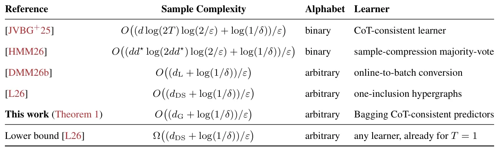

O Problema Fundamental da Autocomplete de Raciocínio
Os modelos de linguagem grandes (LLMs) revolucionaram a inteligência artificial, mas seu mecanismo central permanece surpreendentemente simples: um único preditor de próximo token é aplicado repetidamente. A cada passo, o token gerado é adicionado ao contexto para a próxima previsão. O sucesso empírico desses modelos aumenta drasticamente quando eles não respondem imediatamente, mas geram primeiro uma sequência de passos intermediários, conhecida como Chain-of-Thought (CoT), a partir da qual a resposta final segue logicamente. Treinar modelos nesses demonstrations de raciocínio passo-a-passo tornou-se um ingrediente central nos pipelines modernos de treinamento. No entanto, o progresso empírico por si só não responde a perguntas teóricas fundamentais: quantos demonstrations são necessários para aprender a raciocinar corretamente? Um processo de raciocínio mais longo torna o aprendizado mais difícil? E quais algoritmos fazem o melhor uso dos dados disponíveis?
Um Modelo de Aprendizado Autoregressivo no Regime PAC
Para responder a essas questões, os autores adotam um framework de aprendizado PAC (Probably Approximately Correct) para aprendizado autoregressivo, introduzido elegantemente por Joshi et al. Neste modelo, um modelo de linguagem é abstraído como um gerador de próximo token autoregressivo f, que mapeia sequências de tokens Sigma_star para o próximo token em Sigma. Dado um prompt x, o gerador produz o primeiro token f^(1)(x) = f(x), depois o segundo f^(2)(x) = f(x concatenado com f^(1)(x)), e assim por diante. Após T passos, o modelo produziu uma cadeia de pensamento f^(1:T)(x), cujo último token é interpretado como a resposta. O mesmo gerador é usado em cada passo, refletindo exatamente como um modelo de linguagem aplica os mesmos pesos a cada prefixo.
Supervisão End-to-End vs. Supervisão Chain-of-Thought
Duas formas de supervisão surgem naturalmente neste contexto. Na supervisão end-to-end, o aprendiz observa prompts com suas respostas finais, mas o raciocínio que as produziu permanece oculto. Este paper foca na supervisão Chain-of-Thought, onde o aprendiz observa toda a cadeia de pensamento completa. Seja P uma distribuição sobre prompts e cadeias de pensamento realizáveis por algum f_star na classe F, no sentido de que a probabilidade de o gerador verdadeiro produzir a cadeia observada é 1. O aprendiz observa n amostras i.i.d. e retorna um preditor f_hat, que é então executado autoregressivamente.
A Métrica de Risco CoT e a Dependência do Comprimento
A performance do preditor f_hat é medida pelo risco CoT. Diferente do risco end-to-end, que apenas verifica se a última palavra está correta, o risco CoT exige que o preditor reproduza toda a cadeia de pensamento. Um único token incorreto em qualquer passo t em [T] torna a saída incorreta. A definição formal é a probabilidade de existir algum passo t onde f_hat^(t)(x) não é igual a y_t. O desafio teórico reside em entender como a complexidade de amostra necessária para atingir uma precisão epsilon com confiança 1-minus_delta escala com o comprimento da cadeia T. Trabalhos anteriores mostraram bounds que dependiam de T, levantando a questão de se essa dependência era necessária ou um artefato do algoritmo.
A Ideia Central: Bagging de Preditores Consistentes
O paper apresenta um algoritmo simples baseado em bagging (bootstrap aggregating). A ideia é treinar múltiplos geradores de tokens em amostras bootstrap dos dados de treinamento. Cada gerador individual é treinado para ser CoT-consistente, ou seja, para reproduzir fielmente as cadeias de pensamento observadas em sua amostra específica. Em seguida, o algoritmo de saída é uma votação majoritária desses geradores. Para conjuntos de tokens binários, este método alcança a complexidade de amostra ótima de O((d_VC mais log(1/delta))/epsilon), onde d_VC é a dimensão de VC da classe F. O ponto crucial é que esta complexidade é independente do comprimento da cadeia de pensamento T.
Generalização para Conjuntos de Tokens Arbitrários
Para conjuntos de tokens finitos Sigma (não binários), a dimensão de VC é substituída por uma análoga multiclasse, chamada dimensão Graph d_G. A complexidade de amostra resultante é ótima até um fator de log(|Sigma|). O número de geradores na ensemble de votação majoritária é O(log(T/delta)). Isso significa que, embora o comprimento da cadeia T influencie o tamanho da ensemble, ele não degrada a eficiência da amostra de treinamento necessária para aprender a função base. Os autores mostram ainda que a ensemble pode ser destilada em um único gerador em F, ao custo de n log(nT) prompts não rotulados adicionais.

Comparação com o Estado da Arte
Para contextualizar a contribuição, observe a Tabela 1 do paper. Trabalhos anteriores, como o de Joshi et al., apresentavam complexidades que dependiam de termos como log(2T) ou dimensões duais. O método de sample-compression de Hanneke et al. também apresentava dependências complexas. Em contraste, o método de conversão online-to-batch de DMM26 e o de hipergráficos one-inclusion de L26 já alcançavam complexidades independentes de T para cenários arbitrários. Este paper alinha-se a esses resultados de otimalidade, mas o faz através de um algoritmo construtivo e simples baseado em bagging, que é facilmente implementável e teoricamente sólido.
Mecanismo Detalhado: Como o Bagging Funciona Aqui
O algoritmo opera da seguinte forma: dado um conjunto de treinamento S de tamanho n, geramos M amostras bootstrap S_1, ..., S_M de S. Para cada amostra S_m, treinamos um preditor f_hat_m que minimiza o erro empírico de consistência CoT. Ou seja, f_hat_m é escolhido para prever corretamente todos os tokens em todas as posições das cadeias de pensamento presentes em S_m. A previsão final para um novo prompt é obtida pela votação majoritária dos tokens previstos por cada f_hat_m em cada passo autoregressivo. A consistência CoT é uma condição forte: exige que o modelo não erre nenhum token na sequência.
Análise Teórica e Dimensões de Complexidade
A prova de otimalidade depende de propriedades estatísticas da votação majoritária aplicada a preditores consistentes. Para o caso binário, a dimensão de VC d_VC governa a taxa de convergência. Para o caso multiclasse, a dimensão Graph d_G generaliza a VC. A dimensão Graph mede a complexidade da classe de funções considerando a capacidade de shatter sequências de tokens em múltiplas classes. O fator log(|Sigma|) surge da union bound sobre o vocabulário ao garantir que a votação majoritária seja correta para todos os tokens possíveis. O resultado é robusto e não assume distribuição específica sobre os prompts, apenas a realizabilidade.
Destilação da Ensemble
Uma vantagem prática é a possibilidade de destilação. A ensemble de M = O(log(T/delta)) geradores pode ser compactada em um único gerador f_tilde em F. Isso é feito usando prompts adicionais não rotulados. A complexidade de amostra para a destilação é n log(nT), onde n é o tamanho do conjunto de treinamento original. Isso significa que, se tivermos acesso a dados não rotulados abundantes, podemos obter um modelo único eficiente, sem perder as garantias de precisão da ensemble, exceto pelo custo adicional de dados não rotulados.
Implicações para o Treinamento de LLMs
Este resultado teórico valida o uso de métodos de ensemble ou agregação no treinamento de modelos de raciocínio. Ele sugere que a complexidade intrínseca do aprendizado de cadeias de pensamento é determinada pela complexidade da classe de funções do modelo (medida por d_VC ou d_G) e não pelo comprimento da cadeia. Isso é encorajador para o desenvolvimento de modelos que realizam raciocínios longos e complexos, pois não há uma penalidade de comprimento fundamental na amostra necessária para aprender a estrutura.
O que o Paper Não Mostra
É importante notar o escopo limitado. O paper não fornece experimentos empíricos em LLMs reais; é puramente teórico. Não aborda a eficiência computacional do treinamento da ensemble ou da destilação em larga escala. Não explora a generalização para cenários onde a supervisão CoT é parcial ou ausente em alguns passos. Além disso, a complexidade de amostra ótima é assintótica; para tamanhos de dados finitos e classes de funções muito grandes, os fatores constantes e logarítmicos podem ser significativos.
Conclusão
Em resumo, Optimal Autoregressive Chain-of-Thought Learning via Bagging estabelece uma base teórica sólida para o aprendizado de modelos de raciocínio passo-a-passo. Ao mostrar que a complexidade de amostra é ótima e independente do comprimento da cadeia, os autores desmistificam uma preocupação comum sobre a escalabilidade do treinamento CoT. O algoritmo de bagging proposto é simples, eficaz e teoricamente justificado, oferecendo um caminho claro para a análise futura de métodos de aprendizado autoregressivo.
O que fica
- O aprendizado de cadeias de pensamento (CoT) pode atingir complexidade de amostra ótima independente do comprimento da cadeia T.
- O algoritmo de bagging de preditores CoT-consistentes alcança essa otimalidade para classes com dimensão VC ou Graph finita.
- Um fator logarítmico do vocabulário |Sigma| aparece no caso multiclasse, mas não há penalidade direta por raciocínios longos.
- A ensemble resultante pode ser destilada em um único modelo usando dados não rotulados, mantendo as garantias teóricas.
Paper original: Optimal Autoregressive Chain-of-Thought Learning via Bagging
Comentários
Nenhum comentário ainda. Seja o primeiro.